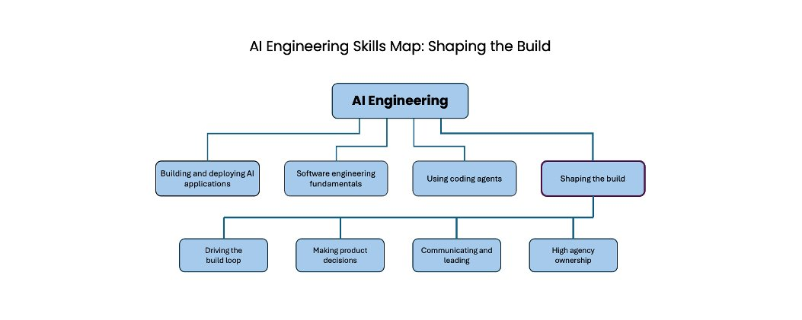

AI 工程技能图：塑造建造过程
AI Engineering Skills Map: Shaping the build
- 分类
- AI
- 来源
- X · @AndrewYNg
- 原文
- 整理
- 原文链接
- 原文
Skills Map 系列续篇。前两篇：Building and Deploying AI Applications、Software engineering fundamentals。本篇展开「塑造建造过程」。
先看这五句 / Highlights
译者补充，不是原文。
- AI Engineering 的高手活，不只是按别人写好的规格实现，而是主动塑造建造过程：影响做什么，并驱动构建循环。
- PM、设计师、开发者的边界在模糊；会塑造建造，就不必事事等 PM 想清楚再动手。
- 四项关键技能：驱动构建循环、拍产品决策、沟通与领导、高主体性所有权。
- 产品感、基础设计感、基础商业感（含 go-to-market、市场规模、单位经济、P&L）都建立在用户共情上，并靠访谈、问卷、A/B、行为分析持续打磨。
- 机会在于：许多人（含部分高管）还不懂 AI 能做什么；有技术的人可以自己发现问题、提出方案、端到端执行——DeepLearning.AI 的重点，就是帮你练成这些 AI Engineering 技能。

塑造建造过程
当你精通 AI Engineering，你最好的工作不会只是去实现别人已经写好规格的产品。相反，你会主动塑造建造过程。
在现代 AI 工具加速、并扩大单个开发者能做的事之前，科技公司形成了这样的做法：由产品经理（PM）和设计师规定该建什么，再由开发者去建造。或许还会有一个项目经理额外推动时间线。然而，这些角色正在模糊。精通 AI engineering 的开发者不仅建造软件，也参与这些其他角色。（同样，产品经理和设计师也在获得 AI Engineering 技能，并参与建造软件。）
这一变化正大幅加速软件开发。当你知道如何塑造建造过程，就能走得更快，而不必等 PM 想清楚下一步该做什么。
塑造建造过程的关键技能是：
- 驱动构建循环（Driving the build loop）
- 拍产品决策（Making product decisions）
- 沟通与领导（Communicating and leading）
- 高主体性所有权（High-agency ownership）
驱动构建循环
大多数软件是通过一个循环建造出来的：你写一些代码，然后得到一些反馈，再决定下一步做什么。作为熟练的 AI engineer，你在驱动这个循环上扮演关键角色，反复决定推动项目前进的下一步。你有行动偏好（bias for action），并以 AI 所使能的高速度驱动这个循环。
例如，你可能决定做一个快速原型，去验证某个技术概念或用户功能；做一个 MVP（minimum viable product，最小可行产品）拿给用户看、以证明价值；增加功能；或者投入建设企业级系统。你经常以小批量交付，以保持速度。你知道何时该向用户或其他利益相关方获取反馈，或何时该跑一个技术实验（例如训练一个模型）来收集信息，以便决定下一步。你做这些决策时，会把产品愿景、项目所处阶段、技术可行性、关键风险、投入与预算一并纳入考量。对于更成熟的项目，你知道如何定义关键指标，并用项目管理的方式推动这些指标改进。
拍产品决策
开发者不必变成 PM，但你会做产品规格没有覆盖到的决策。如果有人让你在没有规格的情况下去建造，你知道如何自己发展出一份规格。
你具备产品感，能够选择一条真正满足用户需求的产品方向，而不必等 PM 替你做每一个决定。你至少也具备基础的设计感，能把东西做得不仅能用，而且用起来令人愉悦。你还具备一些基础的商业感，因此能思考 go-to-market、市场规模、单位经济，以及损益（P&L）这类问题，并做出在经济上说得通的取舍。你拍产品决策的能力，根植于你对用户的共情。进一步说，你会持续用多种方法打磨这种共情——例如与 2–3 位用户做快速非正式访谈、对成百用户做问卷、做大规模 A/B 测试，或分析成千上万乃至数百万用户的行为。你会用由此得到的输入，去加深对用户的理解。
沟通与领导
你的 AI Engineering 技能，让你能参与比传统软件开发所允许的更广的工作范围。我此前写过，专精型开发者（比如前端开发者）现在更可能扮演更宽的全栈角色。AI Engineering 技能打开的门，甚至能把你的范围扩到比这更远：你可能参与影响你项目的其他职能，比如市场、财务、法务等等。这使得你与这些其他职能沟通的能力，比以往更重要——你可以通过对齐与协调利益相关方，在推动项目前进上扮演关键角色。（沟通技能也是与用户交谈、从而打磨用户共情的重要基础。）
此外，因为 AI 技术在快速演进，工程之外的许多人正在试图理解这项技术、它对他们工作的影响，以及它使能的新实践与新产品。你在 AI Engineering 上的技术能力让你走在前面，并让你能在塑造这些认知上扮演独特角色。例如，你可以解释为什么某些举措在技术上可行或不可行。这让你能帮助带领更广的组织向前走。
高主体性所有权
AI engineering 技能给了你巨大的机会去产生影响。然而，许多人——包括一些高管——还不完全理解 AI 能做什么，因此也不知道什么是好的项目方向。这给有技术能力的人留出了一个缝隙去弥合：你可以自己发现问题、提出解决方案，并执行它们——在尊重组织优先级与约束的同时，不必等待精确的自上而下指令。这项技能需要高度的主体性（agency）：你识别机会，排出什么最要紧，并付诸行动。此外，你知道如何端到端地拥有一项倡议，对出现的问题承担责任，在模糊中行动，在挫折中坚持，并且不只用任务是否完成来衡量自己的工作，而是按你创造的价值来衡量。
收束
最后，你会投资于提升自己的技能。你跟踪技术前沿，学习新工具，调优自己的工作流，并持续学习——从而随时间变得更好。
不只是建造，而是塑造建造过程——这一机会，让 AI Engineering 比传统软件开发更令人兴奋。你被赋予更多权能，拥有更广的范围，并做更多决策。但要把这一切做好，需要更大的技能集合。DeepLearning.AI 的重点，是在你愿意的前提下，帮助你精通 AI Engineering。
我期待前方的路！